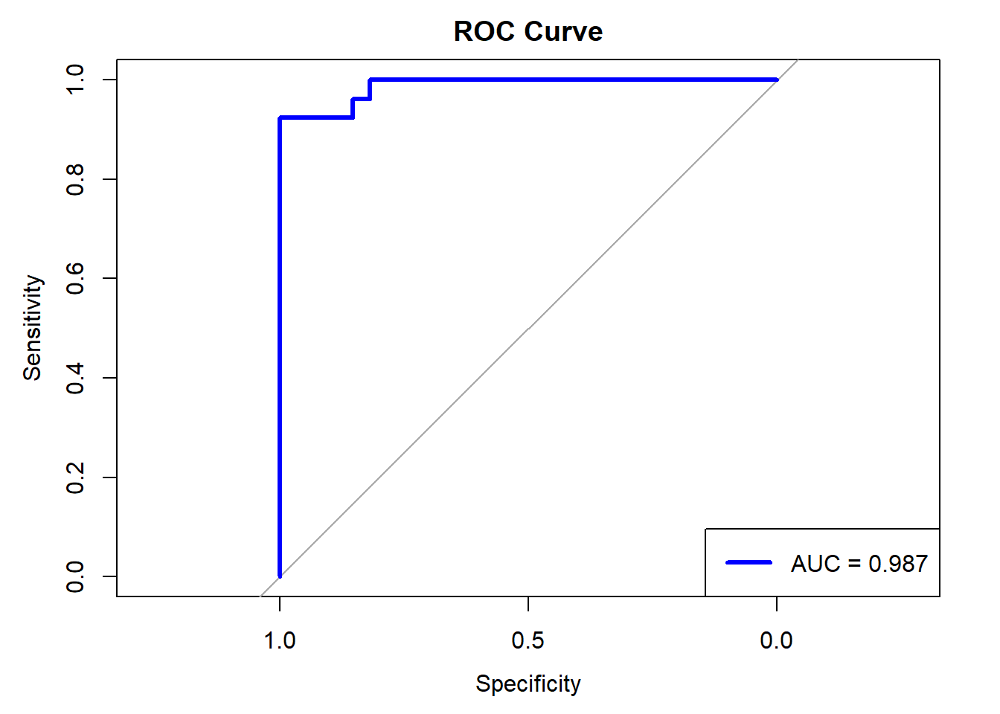
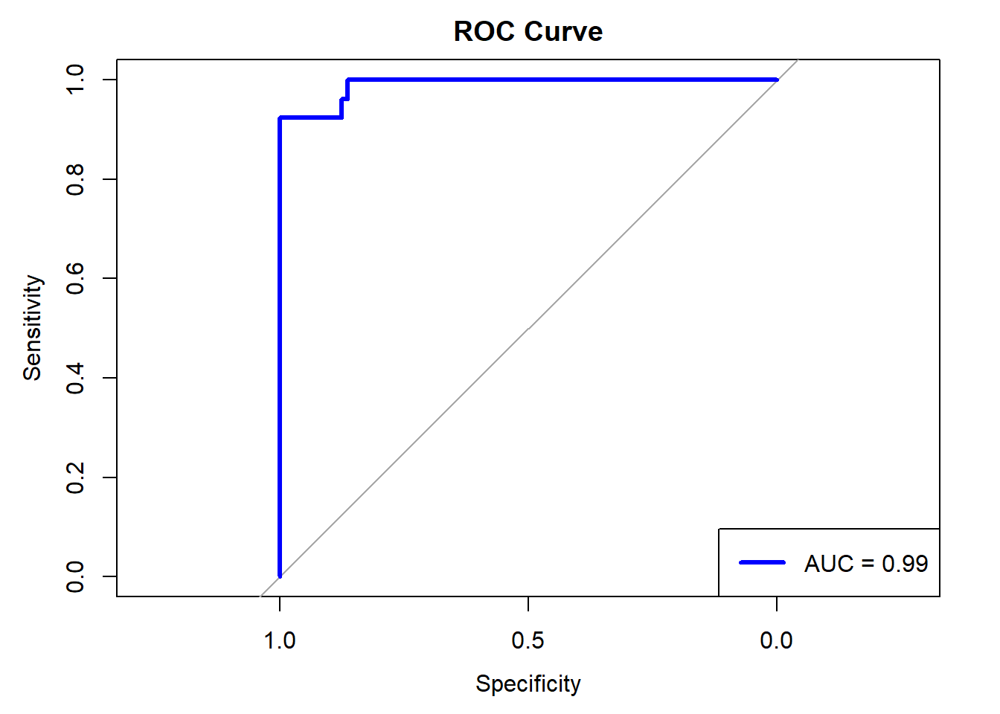

Breast cancer detection using Artificial intelligence
AI
analysis
R
Author
Aditya Ranade
Published
April 11, 2025
I found this dataset on UCI machine learning repository which gives the dataset for breast cancer detection. It has 10 basic variables which indicates different aspects of measurements in a medical examination. For the 10 variables, the dataset provided mean, sd and the worst measurement. We will focus on the mean measurement.
library(reshape2)library(ggplot2)library(dplyr)library(ggh4x)library(GGally)library(pROC)library(glmnet)# Get data from github repopath <-"https://raw.githubusercontent.com/adityaranade/portfolio/refs/heads/main/breast_cancer/wdbc.data"data00 <-read.table(path, sep =",", header =FALSE)data0 <- data00[,2:12] # Use only first 11 columns# Data processinghead(data0)
Since the measurements are taken on the same object, there is bound to be some correlation between the variables. For example, there will be strong correlation between radius, perimeter and area. So using all the three variables in a model will not be a good idea as it might not give a good reliable model.
# data (select all the explanatory variables)data <- data0 |> dplyr::select(radius, texture, perimeter, area, smoothness, compactness, concavity, concave_points, symmetry, fractal_dimension)# convert the response to factor and categorical variabledata$response <-ifelse(data0$diagnosis=="B",0,ifelse(data0$diagnosis=="M",1,99))# Check the first 6 rows of the datasetdata |>head()
'data.frame': 569 obs. of 11 variables:
$ radius : num 18 20.6 19.7 11.4 20.3 ...
$ texture : num 10.4 17.8 21.2 20.4 14.3 ...
$ perimeter : num 122.8 132.9 130 77.6 135.1 ...
$ area : num 1001 1326 1203 386 1297 ...
$ smoothness : num 0.1184 0.0847 0.1096 0.1425 0.1003 ...
$ compactness : num 0.2776 0.0786 0.1599 0.2839 0.1328 ...
$ concavity : num 0.3001 0.0869 0.1974 0.2414 0.198 ...
$ concave_points : num 0.1471 0.0702 0.1279 0.1052 0.1043 ...
$ symmetry : num 0.242 0.181 0.207 0.26 0.181 ...
$ fractal_dimension: num 0.0787 0.0567 0.06 0.0974 0.0588 ...
$ response : num 1 1 1 1 1 1 1 1 1 1 ...
# Check the rows which do not have any entriessum(is.na(data)) # no NA values
[1] 0
We look at the distribution of the continuous data variables based on if response variable is 1 which indicates the tumor is malignant (cancerous) or response variable is 0 which indicates the tumor is benign (non cancerous).
# Data for histogrammelted_data <-melt(na.omit(data0), id="diagnosis")melted_data$diagnosis <-ifelse(melted_data$diagnosis =="M","Malignant",ifelse(melted_data$diagnosis =="B","Benign","NA"))# Plot the histogram of all the variablesggplot(melted_data,aes(value))+geom_histogram(aes(),bins =30)+facet_grid2(diagnosis~variable, scales="free")+theme_bw()
There is a noticeable difference between the distribution of the variables for the two categories. Let us look at pairs plot which will help us understand the correlation between each pair of explanatory variables.
# Pairs plot between the explanatory variables to # check correlation between each pair of the variablesggpairs(data[,-ncol(data)])
As expected, there is multicollinearity in the data. One way to mitigate the effect of multicollinearity is to use \(L2\) regularization (often called as ridge regression). Another way is to transform the data using principal component analysis (PCA) and use that data for regression. In this instance, we will first look at logistic regression and then logistic regression using L2 regularization.
We first split the data into training and testing set.
# split the data into training and testing dataseed <-23set.seed(seed)ind <-sample(floor(0.8*nrow(data)),replace =FALSE)# Training datasetdata_train <- data[ind,]# Testing datasetdata_test <- data[-ind,]
Let us look at the results of logistic regression.
# Fit an binary logistic regression modelmodel <-glm(response ~ ., data = data_train, family = binomial)# Check the summary of the modelmodel |>summary()
Call:
glm(formula = response ~ ., family = binomial, data = data_train)
Coefficients:
Estimate Std. Error z value Pr(>|z|)
(Intercept) -10.90839 14.88757 -0.733 0.46373
radius -2.64293 4.05814 -0.651 0.51487
texture 0.47784 0.08329 5.737 9.63e-09 ***
perimeter 0.02482 0.57887 0.043 0.96580
area 0.04017 0.01981 2.027 0.04263 *
smoothness 107.08151 39.67654 2.699 0.00696 **
compactness -2.66325 22.90510 -0.116 0.90744
concavity 6.57732 9.57425 0.687 0.49210
concave_points 56.61819 32.77129 1.728 0.08405 .
symmetry 2.79133 12.47816 0.224 0.82299
fractal_dimension -40.94988 92.09458 -0.445 0.65657
---
Signif. codes: 0 '***' 0.001 '**' 0.01 '*' 0.05 '.' 0.1 ' ' 1
(Dispersion parameter for binomial family taken to be 1)
Null deviance: 615.54 on 454 degrees of freedom
Residual deviance: 112.51 on 444 degrees of freedom
AIC: 134.51
Number of Fisher Scoring iterations: 9
# Prediction on the testing datasety_pred_prob <-predict(model, data_test,type ="response")y_pred <-ifelse(y_pred_prob>0.5,1,0)# Generate the confusion matrixconf_matrix <- caret::confusionMatrix(as.factor(y_pred),as.factor(data_test$response),positive ="1")conf_matrix
Confusion Matrix and Statistics
Reference
Prediction 0 1
0 77 2
1 11 24
Accuracy : 0.886
95% CI : (0.8129, 0.9379)
No Information Rate : 0.7719
P-Value [Acc > NIR] : 0.001462
Kappa : 0.7113
Mcnemar's Test P-Value : 0.026500
Sensitivity : 0.9231
Specificity : 0.8750
Pos Pred Value : 0.6857
Neg Pred Value : 0.9747
Prevalence : 0.2281
Detection Rate : 0.2105
Detection Prevalence : 0.3070
Balanced Accuracy : 0.8990
'Positive' Class : 1
Our logistic regression model has accuracy around 88.6% on the testing dataset. The misclassification rate on the testing data is (2+11)/114 = 0.1140. We will look at the ROC curve and AUC.
# Compute ROC curveroc_curve <-roc(data_test$response,as.vector(y_pred_prob))# Calculate AUCauc_value <-auc(roc_curve)# Plot the ROC curveplot(roc_curve, col ="blue", lwd =3, main ="ROC Curve")# Add AUC to the plotlegend("bottomright", legend =paste("AUC =", round(auc_value, 3)), col ="blue", lwd =3)

We will now try the logistic regression with \(L2\) regularization.
# Now try the logistic regression ridge (L2) regularizationmodel_l2 <-cv.glmnet(as.matrix(data_train[,-ncol(data_train)]), data_train[,ncol(data_train)], family ="binomial",alpha=0)# Plot cross-validation results plot(model_l2)
# View the best lambda best_lambda_l2 <- model_l2$lambda.min print(best_lambda_l2)
[1] 0.03789937
# Fit the final model with the best lambda final_model_l2 <-glmnet(as.matrix(data_train[,-ncol(data_train)]), data_train[,ncol(data_train)],family ="binomial", alpha =0, lambda = best_lambda_l2)coef(final_model_l2,s = best_lambda_l2)
11 x 1 sparse Matrix of class "dgCMatrix"
s1
(Intercept) -14.254070800
radius 0.174447577
texture 0.189604875
perimeter 0.025035861
area 0.001661682
smoothness 34.526223296
compactness 5.508633703
concavity 5.821321243
concave_points 17.322503544
symmetry 5.139945976
fractal_dimension -29.003877807
# Check the summary of the modelfinal_model_l2 |>summary()
# Prediction on the testing datasety_pred_prob_l2 <-predict(final_model_l2, as.matrix(data_test[,-ncol(data_test)]),type ="response")y_pred_l2 <-ifelse(y_pred_prob_l2>0.5,1,0)# Generate the confusion matrixconf_matrix_l2 <- caret::confusionMatrix(as.factor(y_pred_l2),as.factor(data_test$response))conf_matrix_l2
Confusion Matrix and Statistics
Reference
Prediction 0 1
0 84 2
1 4 24
Accuracy : 0.9474
95% CI : (0.889, 0.9804)
No Information Rate : 0.7719
P-Value [Acc > NIR] : 3.302e-07
Kappa : 0.8545
Mcnemar's Test P-Value : 0.6831
Sensitivity : 0.9545
Specificity : 0.9231
Pos Pred Value : 0.9767
Neg Pred Value : 0.8571
Prevalence : 0.7719
Detection Rate : 0.7368
Detection Prevalence : 0.7544
Balanced Accuracy : 0.9388
'Positive' Class : 0
Now the misclassification rate on the testing data is (2+4)/114 = 0.0526. We will now try the logistic regression with \(L2\) regularization, which should improve the performance.
# Compute ROC curveroc_curve_l2 <-roc(data_test$response,as.vector(y_pred_prob_l2))# Plot the ROC curveplot(roc_curve_l2, col ="blue", lwd =3, main ="ROC Curve")# Add AUC to the plotauc_value_l2 <-auc(roc_curve_l2)legend("bottomright", legend =paste("AUC =", round(auc_value_l2, 3)), col ="blue", lwd =3)

Our model has an accuracy of around 94% which indicates the model is correctly identifying the positive and negative cases in around 94% of the cases. Next, we look at the Receiver Operating Characteristic (ROC) curve. It plots the True Positive Rate (TPR) against the False Positive Rate (FPR). It is the visualization of trade-off between correctly identifying positive cases and incorrectly identifying negative cases as positive. A good model has ROC curve which goes from bottom left to top left which means the model is perfectly identifying positive cases and does not identify negatives as positive. On the other hand, a ROC curve which is a straight line from bottom left to to right with slope 1 indicates the model is randomly assigning the positive and negative cases. Our curve is somewhere in between these 2 extreme cases and is decent. The area under the curve (AUC) is around 99% which is also good. Let us compare the coefficients of the model parameters for the two models.
This demonstrates that using L2 regularization in logistic regression where there is multicollinearity improves the model without any transformation. We can also try to build a model using the principal component analysis but that is for another day / dataset.